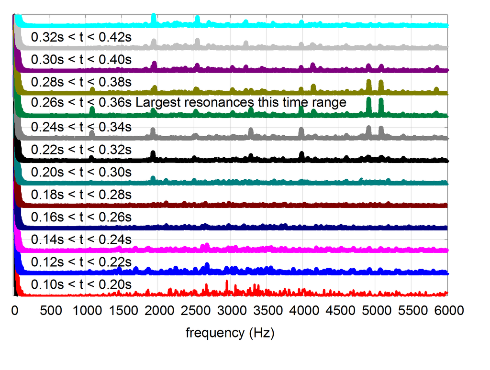
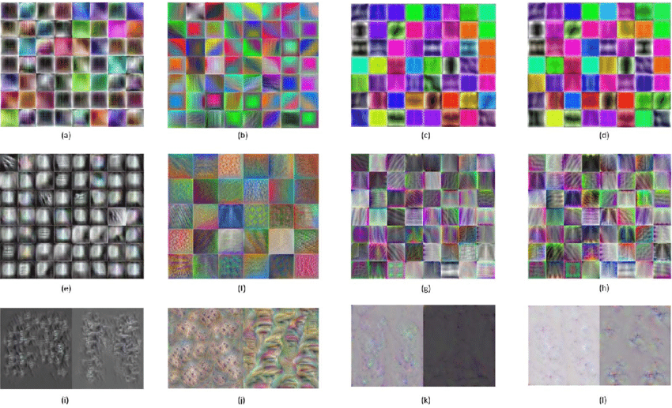
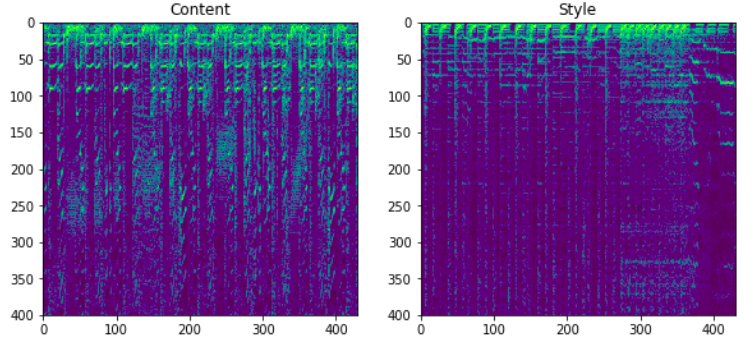
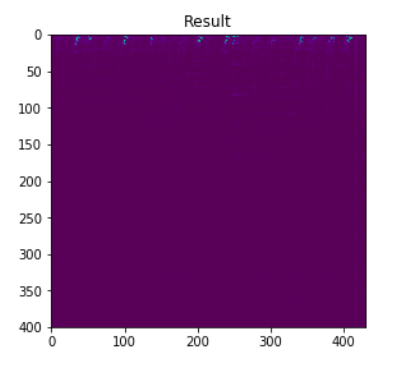
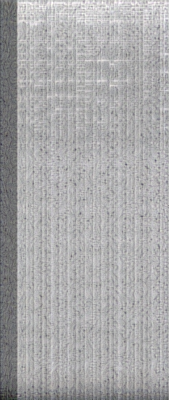
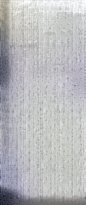
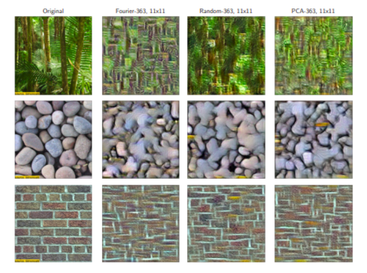

HipHopifier
Sujeeth Jinesh, Hriday Kamshatti, Jeremy AguilonSpring 2019 CS 4803 / 7643 Deep Learning: Class Project
Georgia Tech
This webpage template is based on a similar template from Dr. Devi Parikh's Intro to Computer Vision course.
Introduction
For this project, we explored methodologies in style transfer for audio. Style transfer in audio encompasses challenges such as taking one genre of music and synthesizing it with traits from another genre. We were motivated to pursue this topic for a variety of reasons. First, style transfering music could help DJs make better blends of beats or transition between music easier. Furthermore, production music is a billion-dollar industry. These pieces are typically placed in the background of marketing media and film. They are often simple pieces that could benefit with the extra volume in genre that deep learning like this provides.
Prior Art and Motivation
Currently, there are several approaches for musical style transfer involving Wide, Shallow Convolutional Neural Networks. We wanted to compare this pre-existing art with using deeper neural networks. Furthermore, there are a few approaches for musical style transfer involving VAE's and GAN's (1), VAE's and GAN's (2), and Wavenet Autoencoders.
While VAEs and GANs are certainly worth exploring as well, we focused on adding complexity to a shallow untrained neural net to explore how far this architecture can be pushed.
Approach
Preprocessing Pipeline

Visualization of edges of deep convolutional architectures, such as VGG-16. We hypothesized that primitive shape
detection would aid style transfer (Credit Wikipedia).
All of the architectures followed the same general preprocessing pipeline in order to perform style transfer. In order to make convolutional style transfer of a 1-dimensional waveform tractable, we represent audio tracks as a 2-dimensional image. This image is produced using a Short Time Fourier Transform (STFT), which encodes a long waveform into equal-length segments and computes frequency and phase content for each segment.
Architecture 1: Wide-Shallow Baseline
To establish a baseline, a wide-shallow architecture was implemented using the techniques in our reserach of prior art. This involved creating a neural network with one convolution of 4096 filters. As described in Audio Style Transfer by Grinsten, Duoung, Ozernov, and Perez, an untrained convolutional neural network can actually capture components of both the style and content.
This figure shows the wide-shallow baseline architecture.
Architecture 2: Using VGG-19

Visualization of edges of deep convolutional architectures, such as VGG-16. We hypothesized that primitive shape
detection would aid style transfer (Credit
Sivaramakrishnan Rajaraman).
As an extension the shallow approach, we experimented if adding depth using a pretrained neural network would yield better results. Although VGG-19 was pretrained on an extremely different problem set, its ability to detect primitives such as edges and basic shapes was hypothesized to be useful, even for style transfer.

This figure shows the architecture for VGG19. We used
'block1_conv1', 'block2_conv1', 'block3_conv1', 'block4_conv1', 'block5_conv1' for style transfer.
Architecture 3: [TODO (Hriday): Update your bit]
TODO: Update Hriday is working on a minimalist implementation that uses an untrained CNN for style transfer. The structure of this untrained network is what will be experimented with. Since musical style is somewhat more abstract than images, the results obtained via this untrained network will explore what it means to transfer style without stringent constraints.
Experimental Plan
Dataset
One challenge with style transfer is that there is no objective way to evaluate the success of a style transfer. Thus, we standardized our evaluation by picking one style sample and one audio sample. For the content sample, we utilized jazz elevator music from Bensound. For the style sample, we utilized a specifically selected track from the GTZAN Genre Collection.
(left) BenSound elevator music sample. (right) GTZAN Hip Hop sample.
These two sources were selected for a variety of reasons. First, the elevator music is primarily instrumental while the hip hop style source relies on lyrics and percussion. This constrains the difficulty of the style transfer since our architectures would not need to deal with issues such as music key differences or colliding vocal utterances. This also eases difficulty in subjectively evaluating a style transfer, since it would be very simple to hear whether a particular audio artifact comes from the content or style source.
Finally, while there is no standardized way to evaluate a style transfer, we drafted the following scheme when rating the output of each architecture:
- Human-Equivalent: the outputted audio could plausibly have been created by a human in the desired style.
- Comprehensible: the outputted audio contains easily-understood lyrics and well-blended instrumental artifacts.
- Fair: the outputted audio contains some elements from content and style but lacks refinement in how they are blended.
- Incomprehensible: the outputted audio captures neither content nor style and may have degraded to random noise.
Spectrogram Visuzalizations

The above STFT images were fed into each architecture and then inverted to generate sample audio. Clearly, the content audio spectrogram appears very different than the style audio spectrogram.
Results
Overall Summary
| Architecture | Classification |
|---|---|
| Wide-Shallow Baseline | Fair |
| VGG-19 | Incomprehensible |
| TODO(Hriday) | TODO |
Using the experiment scheme described in the experiment plan, we arrived at the following results. The Wide-Shallow Baseline contained elements from both content sources, although the mixing was erratic and lyrics come across muffled. Unfortunately, the VGG-19 experiment did not match our hypotheses and merely outputted noise. TODO(Hriday): One sentencer here
Wide-Shallow
Resulting Audio
Output Spectrogram

VGG-19
Resulting Audio
Output 1 Iteration Spectrogram

Output 200 Iterations Spectrogram

A visual representation of other songs we attempted to style transfer with over the course of 200 iterations (GIF):

Result Analysis
Wide-Shallow Architecture
Overall, the "fair" rating of this architecture appears to match results from similar architectures. For example, consider the following style transfer from Dmitry Ulyanov, who also utilizes 4096 filters for texture synthesis:
First: Content Source, Second: Style Source, Third: Outputted Sample. (Source)
Clearly, both sources are present in the style trasnfer, but the artifacts sound garbled and imperfectly blended. Although the sample does sound subjectively stronger, Ulyanov's samples do not contain lyrics and utilize symphony instruments only, which likely makes the blending easier.

Texture synthesis involving three source images. From left to right: source, Fourier-transform, shallow
convolutional, PCA. Credit Ustyunhaninov et al.
One fascinating result is that the wide-shallow network had no prior training at all and yet still produced "Fair" results as defined by our qualitative scale. Although counterintuitive, similar results are actually seen in parallel areas of resarch. For example, Ustyuzhaninov et al. found that shallow, untrained convolutional architecture can achieve comparable results in texture synthesis to the trained state of the art (source). They suggest that despite the randomized convolutions, "the Gram matrices computed from the feature maps of convolutional neural networks generically lead to useful summary statistics..." Since audio style transfer also requires matching the Gram Matrix of a source, it follows that the output was reasonable.
VGG 19
The VGG-19 results were quite surprising given the hypothesis of spectrograms benefitting from edge detection. The audio is very garbled and wasn't very representative of any of either audio. We suspect it had to do with the reconstruction process since we were dealing with images of spectrograms instead of the raw values of the spectrograms. When we converted the spectrogram back, we lost a lot of phase information, which we attempted to correct for with a lossy guess of the phase (essentially interpolating it using inverse fourier transform). This results in the audio being garbled.
It was also fascinating to see how the audio also degrades the more iterations we used. At 1 iteration, the audio sounds reasonable, but at 200 iterations the tail end of the reconstruction becomes extremely garbled. The results make sense because a regular CNN wouldn't get phase information, and getting a decent reconstruction at all was fascinating to get. In order to verify we did style transfer correctly, we did a visual analysis of the spectrograms before and after style transfer as shown in the images in the results. Our loss was high over the different images, but gradually got better, tuning the different parameters of style transfer might have resulted in less jerkiness to reduce loss and less of a garbled audio file. Our results seem to be in line with other experiments, because VGG19 is not suited for audio, which is 1D, but VGG takes in 2D information.
Team Member Identification
Provide a list of team members and what each member did in a table
| Name | Description of Work |
|---|---|
| Sujeeth Jinesh | Converted audio into spectrograms to be fed into neural nets. Attempted to adapt Music Tagger CRNN, Priya Dwivedi's CNN-RNN, and VGG19 for style transfer task. Trained it against audio samples and ran it for multiple different iteration lengths to compare results. |
| Hriday Kamshatti | Adapted a pytorch style transfer pipeilne for use with a provided ANN. |
| Jeremy Aguilon | Created the baseline convolutional neural net and provided research for why untrained convolutions provide strong style transfer results |